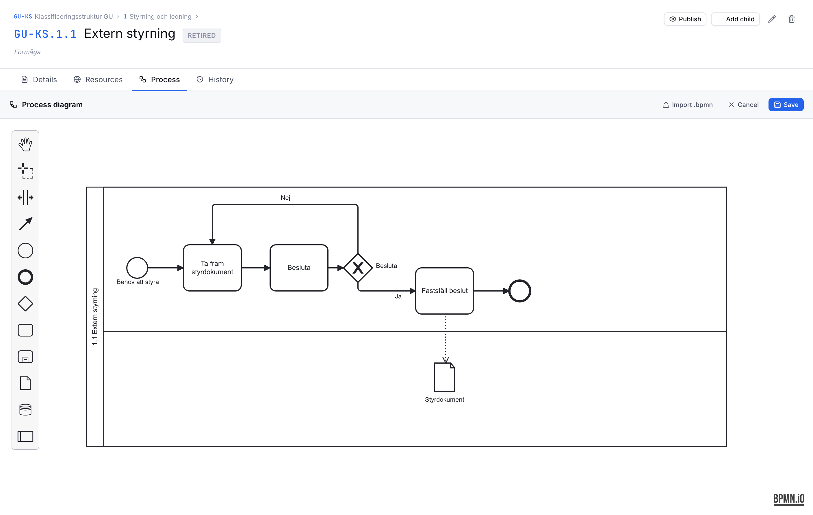
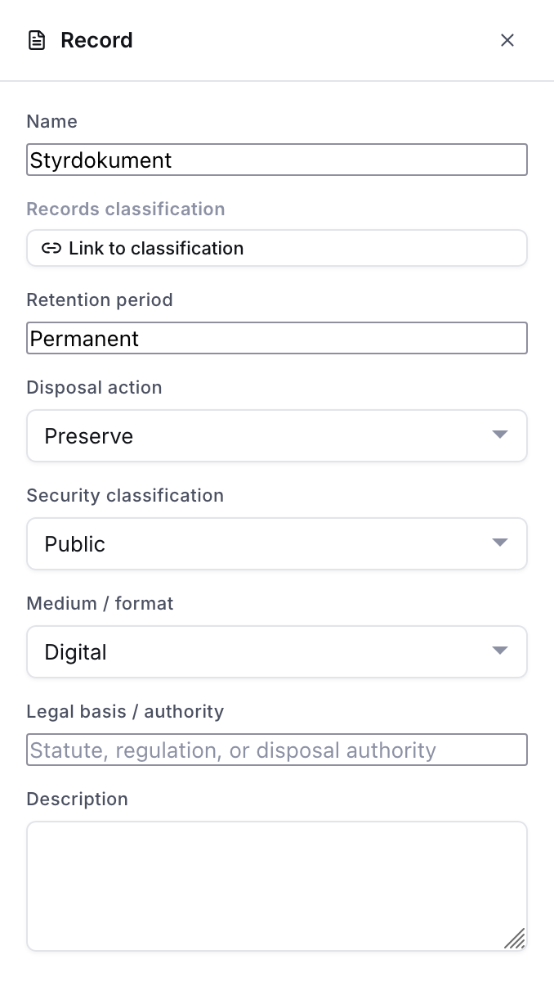
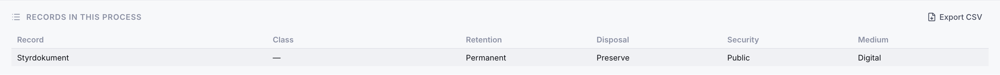

Process descriptions
Classification nodes can carry a process diagram that documents the business process behind a set of records. This supports process-based archival description (verksamhetsbaserad arkivredovisning): you describe what the organisation does, and connect each step to the records it produces.
Diagrams use BPMN 2.0, an open, standard notation for business processes. They are stored as standard BPMN XML, so they can be exported and opened in any BPMN tool.

Opening the editor
Go to any classification node and open the Process tab. If the node has no diagram yet, click Create diagram to start a blank one, or Import .bpmn to load an existing file. A node that already has a diagram is marked with a dot on the tab.
Published classifications are read-only — create a new version to edit the diagram.
Drawing a process
The editor gives you a focused palette:
| Element | Meaning |
|---|---|
| Start / end events | Where the process begins and ends |
| Task | An activity or step in the process |
| Gateways | A decision or a split/join in the flow |
| Data object | A record produced or used by the process |
| Data store | A persistent store of records |
Drag elements onto the canvas and connect them with arrows. Turn on Grid (mm) to show a millimetre grid while positioning.
Records produced by the process
Draw the records a step produces as data objects, and connect them to the relevant task with an arrow:
- An arrow from a task to a data object means the task produces that record.
- An arrow from a data object to a task means the task uses that record.
Select a data object to open its panel on the right, where you can:
- Name the record (e.g. Application form).
- Link it to a records classification — a class or series in one of your schemes. Use the scheme selector to search the right scheme.
- Record its retention period, disposal action, security classification, medium / format, legal basis, and a description. The dropdown values come from Administration → Records values.

Records list and export
Below a saved diagram, the Records in this process list shows every record in the diagram at a glance. Use Export CSV to download the full records-management detail — including which activity produces and uses each record — as a spreadsheet.

Produced by
On a records classification node, a Produced by processes panel shows which processes produce records in that class, and the retention recorded. This is the reverse view: standing at a record type, you can see every process that creates it.
Import and export
- Import .bpmn loads a standard BPMN 2.0 file into the editor.
- Export .bpmn downloads the diagram as standard BPMN XML for preservation or use in other tools.